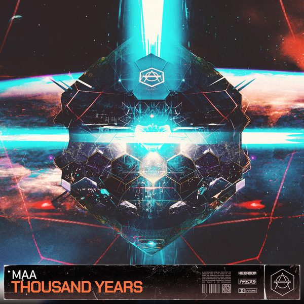

← Tutte le puntate
Crossover #152.
Data di uscita Il radioshow
Dove
Radio WowFM, Emilia-Romagna · il lunedì alle 14
Radio Super SoundFM, Sardegna · il sabato
Stardust Radioweb
I 24 dischi
 1
Marianela (Que Pasa)Hugel, Merk & Kremont
1
Marianela (Que Pasa)Hugel, Merk & Kremont
 2
Impossible BeatFletcher Kerr, Keff
2
Impossible BeatFletcher Kerr, Keff
 3
Life On MarsJaxx Inc.
3
Life On MarsJaxx Inc.
 4
Let's All Chant 2023Federico Scavo
4
Let's All Chant 2023Federico Scavo
 5
Blow Your MindWatermat
5
Blow Your MindWatermat
 6
AfterpartyLoud Luxury & Hook N Sling
6
AfterpartyLoud Luxury & Hook N Sling
 7
Green WasherJoachim Pastor
7
Green WasherJoachim Pastor
 8
Sunday MondayBrando
8
Sunday MondayBrando
 9
TryAdrian Monteiro
9
TryAdrian Monteiro

10 Thousand YearsMAA 11
One NightChester Young, Prime Punk
11
One NightChester Young, Prime Punk
 12
WingsArmand Van Helden, Karen Harding
12
WingsArmand Van Helden, Karen Harding
 13
OverloadKohen, Mert Can, Garonzos
13
OverloadKohen, Mert Can, Garonzos
 14
One LifeShowtek, Sonofsteve
14
One LifeShowtek, Sonofsteve
 15
Easy Lady (Andry J Bootleg)Spagna
15
Easy Lady (Andry J Bootleg)Spagna
 16
Bad Memories (David Guetta Remix)Meduza
16
Bad Memories (David Guetta Remix)Meduza
 17
Told YouEmber
17
Told YouEmber
 18
Hombres Y MujeresFeid, Gordo
18
Hombres Y MujeresFeid, Gordo
 19
Get With NobodyKSHMR
19
Get With NobodyKSHMR
 20
Ain't NobodyFranky Rizardo
20
Ain't NobodyFranky Rizardo
 21
SpeakerVaniat, Funkybeats
21
SpeakerVaniat, Funkybeats
 22
Frank TrumpetNeeds No Sleep
22
Frank TrumpetNeeds No Sleep
 23
FractionsVintage Culture
23
FractionsVintage Culture
 24
Mas Gasolina (Raffa FL Remix)R3hab, Ryan Arnold, N.F.I
24
Mas Gasolina (Raffa FL Remix)R3hab, Ryan Arnold, N.F.I
La tracklist
- 1 Marianela (Que Pasa) Hugel, Merk & Kremont Cr2 Records
- 2 Impossible Beat Fletcher Kerr, Keff Toolroom Records
- 3 Life On Mars Jaxx Inc. Kontor Records
- 4 Let's All Chant 2023 Federico Scavo Area 94
- 5 Blow Your Mind Watermat Solotoko
- 6 Afterparty Loud Luxury & Hook N Sling Armada Music
- 7 Green Washer Joachim Pastor Armada Music
- 8 Sunday Monday Brando Armada Music
- 9 Try Adrian Monteiro Hexagon
- 10 Thousand Years MAA Hexagon
- 11 One Night Chester Young, Prime Punk Sub Religion Records
- 12 Wings Armand Van Helden, Karen Harding Spinnin' Records
- 13 Overload Kohen, Mert Can, Garonzos CONTROVERSIA
- 14 One Life Showtek, Sonofsteve SKINK
- 15 Easy Lady (Andry J Bootleg) Spagna Spagna
- 16 Bad Memories (David Guetta Remix) Meduza Universal-Island Records
- 17 Told You Ember Stashed
- 18 Hombres Y Mujeres Feid, Gordo Ultra Records
- 19 Get With Nobody KSHMR Dharma
- 20 Ain't Nobody Franky Rizardo Altra Moda Music
- 21 Speaker Vaniat, Funkybeats Happy Play House
- 22 Frank Trumpet Needs No Sleep STNS
- 23 Fractions Vintage Culture Tomorrowland Music
- 24 Mas Gasolina (Raffa FL Remix) R3hab, Ryan Arnold, N.F.I Spinnin' Records